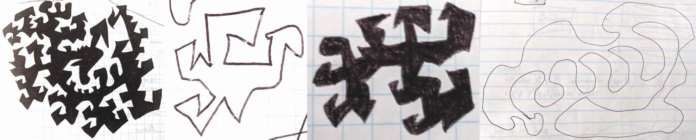

I wanted to make a system that can copy how I doodle in my notebooks. Below are some pictures from my notebooks over the years, showing how I doodle.
You'll notice that, generally, I draw random lines, and I try not to overlap those lines. There are also some common angles and shapes that I subconsciously make.
I've made small programs in the past that try to achieve this programmatically, however it always looked a little too robotic.
To start with, I needed to create a system for recording my doodling style. I created a program that records my drawings in an HTML5 Canvas, and then drew for a couple hours while listening to podcasts.
You can see some of my drawings below. Press the "Random" button to see one of my doodles being drawn.
I used a Python notebook to train the models using Tensorflow 2.0-beta.
The training data (my drawings) were loaded and sent through the following processes:
The final model is a combination of three sequential models:
In the diagram below, I tried to demonstrate the sequence of how I trained each model independently. Training each sub-model separately seemed to help the training process learn faster and more accurately than training end-to-end.
Not really, but I can say that after working on this model for a couple weeks, I learned quite a lot about how to make it work better.
I think some things that could make it better are: